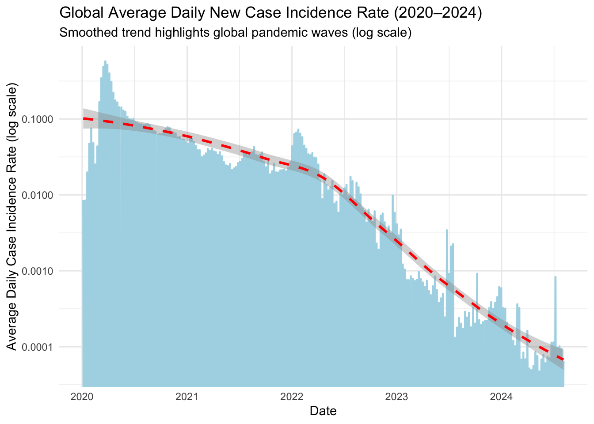
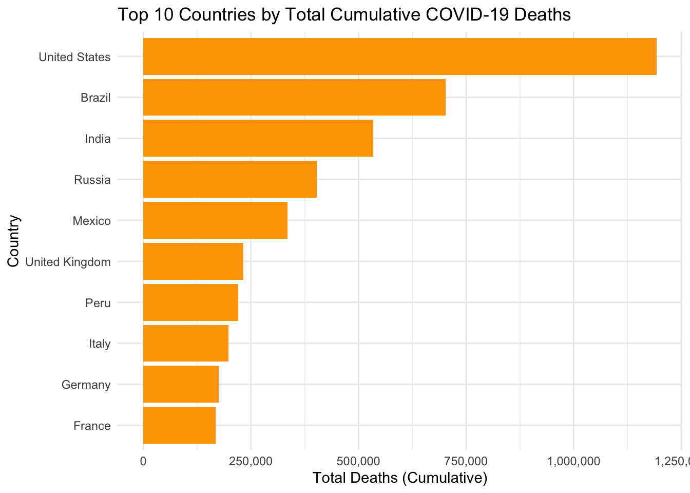
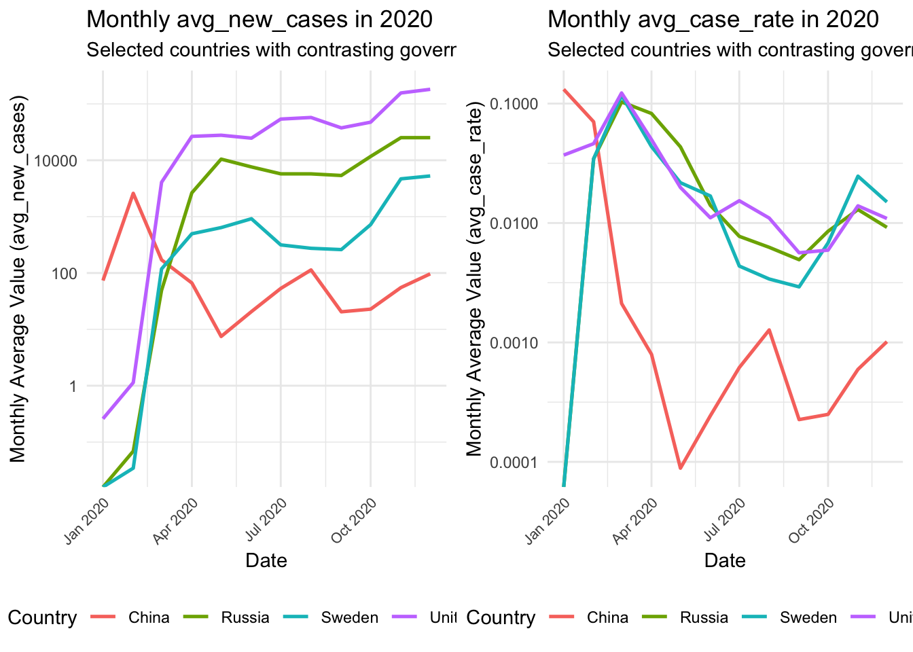
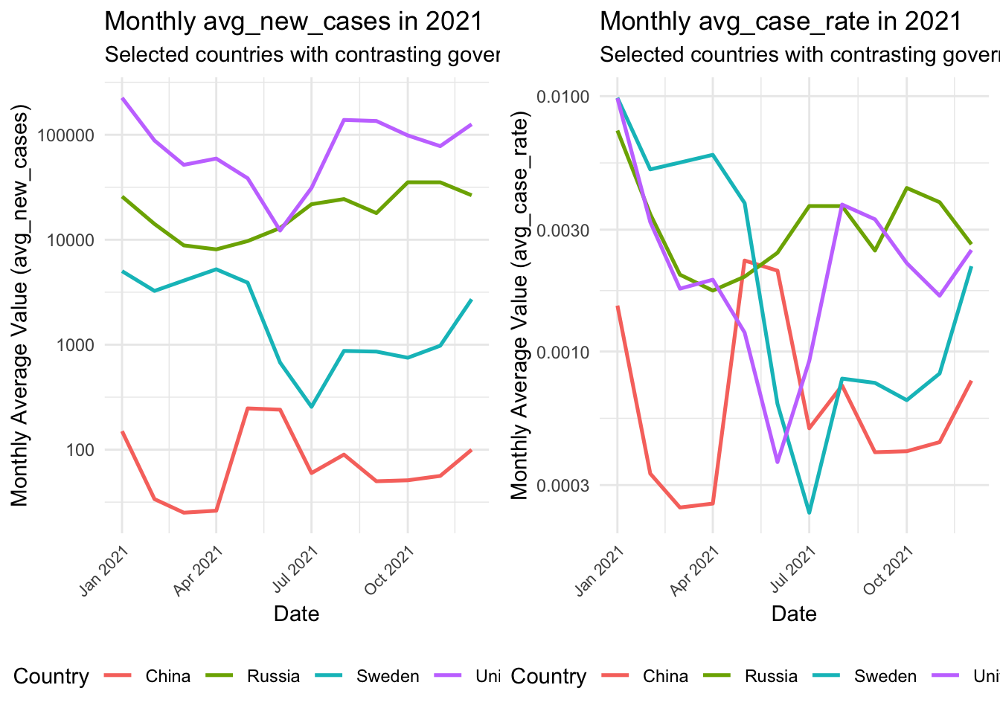

covid_processed <- covid_tidy %>%
filter(!location %in% c(
"World", "Africa", "Asia", "Europe", "North America", "South America", "Oceania",
"High-income countries", "Upper-middle-income countries",
"Lower-middle-income countries", "Low-income countries",
"European Union (27)"
)) %>%
rename(country = location)SOCS0100 Report: COVID-19 Cases and Deaths Data Analysis
1A. Data Exploration and Contextualization
This report analyses the COVID-19 Cases and Deaths Database. The dataset comprises 411,804 observations across 10 variables, documenting the daily progression of COVID-19 across 246 countries and territories from January 2020 to August 2024. It qualifies as panel data as it combinines repeated daily observations (indexed by date) for multiple cross-sectional units (identified by location).This structure allows both temporal and cross-national analysis of pandemic’s dynamics. Overall, the dataset includes core epidemiological indicators such as new_cases and total_deaths, as well as derived rolling metrics like weekly_cases and weekly_deaths. This dataset was selected because trends in case and death records capture how different societies responded to an unprecedented health crisis, dynamics interesting from a social science perspective. They reflect broader social processes including policy responses, institutional capacity and resource mobilization.
Loading and Inspecting the Data: Summary Statistics
First, the packages are loaded and the dataset imported. Then the structure is checked and summary statistics produced to inspect completeness, means and standard deviations.
Preliminary inspection indicates high data completeness. Key variables such as location and date have no missing values, while rolling aggregates show around 1 % missing data likely due to early reporting gaps. It is therefore assumed that those missing values do not introduce bias. For instance, biweekly_cases has 4,597 missing observations, whereas total_cases and total_deaths are fully complete. New_cases and new_deaths both contain some missing values (1,645 and 1,196 respectively).
The daily change variables exhibit highly right-skewed distributions typical of epidemic data. Both new_cases and new_deaths have medians of zero but extreme maximum values (4,423,627 and 103,719 respectively). New_cases averages 8,017 with a standard deviation of 229,665. Rolling aggregates show similar patterns: weekly_cases has a mean of 56,287 (standard deviation 606,313, median 84). These extreme variance patterns, where standard deviations vastly exceed means and medians remain near zero, reflect the extended periods of relatively low activity and explosive growth during epidemic waves.
1B. Data Processing and Functional Programming
This section documents data wrangling operations performed to prepare the dataset for analysis. Cleaning and transformation steps apply functional programming principles to ensure reproducibility and clarity while addressing some data quality issues identified previously.
The pipeline follows a structured sequence of operations:
Filtering aggregate regions
Creating a safe rate function for division
Handling missing values and creating new variables
Aggregating and reshaping data for visualization
Computing global daily averages through an automated function
Operation 1. Geographic Filtering
The dataset originally contained aggregate regions (e.g., World, Africa, Europe) alongside individual countries. Since this report will focus on country-level trends, the other aggregates are removed using filter(). The variable location was renamed to country for clarity.
| date | country | new_cases | new_deaths | total_cases | total_deaths | weekly_cases | weekly_deaths | biweekly_cases | biweekly_deaths |
|---|---|---|---|---|---|---|---|---|---|
| 2020-01-05 | Afghanistan | 0 | 0 | 0 | 0 | NA | NA | NA | NA |
| 2020-01-06 | Afghanistan | 0 | 0 | 0 | 0 | NA | NA | NA | NA |
| 2020-01-07 | Afghanistan | 0 | 0 | 0 | 0 | NA | NA | NA | NA |
| 2020-01-08 | Afghanistan | 0 | 0 | 0 | 0 | NA | NA | NA | NA |
| 2020-01-09 | Afghanistan | 0 | 0 | 0 | 0 | NA | NA | NA | NA |
This step ensures that each observation corresponds to a single country, making later cross-national comparisons meaningful.
Operation 2. Custom Safe Division Function
To avoid division-by-zero errors during rate calculations, a safe_rate() function was defined. It divides two variables returning zero when the denominator equals zero.
safe_rate <- function(numerator, denominator) {
if_else(denominator == 0, 0, numerator / denominator)
}This function is necessary because several early-pandemic days have zero cumulative cases, which would produce infinite or missing rate values.
Operation 3. MultiStep Data Wrangling
This operation performs three data cleaning and engineering tasks:
Recoding: Extracts
yearandmonthfrom date usinglubridate, enabling easier analysis. The original date variable is continuous, which would make it difficult to aggregate and visualize trends over time. Thus, categorical variables are created.Missing value handling: Replaces missing values in
new_casesandnew_deathswith zeros (interpreted as no reported events). This prevents errors in later aggregation or rate calculations. In contrast, NAs in rolling variables are assumed to be arising naturally at the start of each period and are left unchanged.New variable creation: Calculates derived indicators:
death_rateandnew_case_rateusing thesafe_rate()function. Raw counts alone are insufficient for meaningful cross-country comparisons, because countries differ in population size and testing capacity.
analysis_data <- covid_processed %>%
mutate(
year = lubridate::year(date),
month = lubridate::month(date, label = TRUE)
) %>%
mutate(
across(.cols = c(new_cases, new_deaths),
.fns = ~ replace_na(.x, 0),
.names = "{.col}_clean")
) %>%
mutate(
death_rate = safe_rate(total_deaths, total_cases),
new_case_rate = safe_rate(new_cases_clean, total_cases)
) %>%
select(country, year, month, date,
new_cases, new_cases_clean,
new_deaths, new_deaths_clean,
total_cases, total_deaths,
death_rate, new_case_rate)| country | year | month | date | new_cases | new_cases_clean | new_deaths | new_deaths_clean | total_cases | total_deaths | death_rate | new_case_rate |
|---|---|---|---|---|---|---|---|---|---|---|---|
| Afghanistan | 2020 | Jan | 2020-01-05 | 0 | 0 | 0 | 0 | 0 | 0 | 0 | 0 |
| Afghanistan | 2020 | Jan | 2020-01-06 | 0 | 0 | 0 | 0 | 0 | 0 | 0 | 0 |
| Afghanistan | 2020 | Jan | 2020-01-07 | 0 | 0 | 0 | 0 | 0 | 0 | 0 | 0 |
| Afghanistan | 2020 | Jan | 2020-01-08 | 0 | 0 | 0 | 0 | 0 | 0 | 0 | 0 |
| Afghanistan | 2020 | Jan | 2020-01-09 | 0 | 0 | 0 | 0 | 0 | 0 | 0 | 0 |
This procedure ensures the dataset is complete, consistent, and ready for analysis.
Operation 4. Aggregation and Reshaping Function
To simplify very detailed daily data, a function aggregate_and_tidy() was defined. It address extreme variability in daily COVID-19 data, leaving only the essential trends for meaningful cross-country comparison. It performs two tasks:
Aggregation: Calculates monthly averages and totals for each country
Reshaping: Converts the data from wide to long format for easier plotting
aggregate_and_tidy <- function(data) {
monthly_data <- data %>%
group_by(country, year, month) %>%
summarise(
avg_new_cases = mean(new_cases_clean, na.rm = TRUE),
avg_case_rate = mean(new_case_rate, na.rm = TRUE),
total_deaths_month = sum(new_deaths_clean, na.rm = TRUE),
.groups = 'drop'
)
monthly_data %>%
pivot_longer(
cols = starts_with("avg_"),
names_to = "metric_type",
values_to = "metric_value"
)
}
analysis_long_rates <- aggregate_and_tidy(analysis_data)| country | year | month | total_deaths_month | metric_type | metric_value |
|---|---|---|---|---|---|
| Afghanistan | 2020 | Jan | 0 | avg_new_cases | 0.00 |
| Afghanistan | 2020 | Jan | 0 | avg_case_rate | 0.00 |
| Afghanistan | 2020 | Feb | 0 | avg_new_cases | 0.00 |
| Afghanistan | 2020 | Feb | 0 | avg_case_rate | 0.00 |
| Afghanistan | 2020 | Mar | 2 | avg_new_cases | 2.94 |
This function can be applied to different temporal windows or country subsets making monthly aggregation reproducible across analyses.
Operation 5. Global Trend Calculation Function
A second function, calculate_global_daily_trends(), computes the global daily average of key metrics. This allows easy comparison between worldwide pandemic patterns and individual country trends.
calculate_global_daily_trends <- function(data) {
data %>%
group_by(date) %>%
summarise(
global_avg_case_rate = mean(new_case_rate, na.rm = TRUE),
global_death_rate = mean(death_rate, na.rm = TRUE),
.groups = 'drop'
)
}
plot_data_global <- calculate_global_daily_trends(analysis_data)| date | global_avg_case_rate | global_death_rate |
|---|---|---|
| 2020-01-05 | 0.009 | 0.013 |
| 2020-01-06 | 0.000 | 0.013 |
| 2020-01-07 | 0.000 | 0.013 |
| 2020-01-08 | 0.000 | 0.013 |
| 2020-01-09 | 0.000 | 0.013 |
While this function is not directly used for visualization later, it provides a reusable template for computing global diffusion patterns or macro-level comparisons. It can be used to contextualize country-level findings within broader international trends.
Summary
The performed processing operations transform raw epidemiological data into an analysis-ready, reproducible format. By combining tidyverse operations with custom functions, the workflow achieves prevention of computational errors and a design that simplifies reuse and extension. It establishes a foundation for the visualization section that follows.
2A. Data Data Visualization and Functional Programming
This section presents three complementary visualizations created from the refined dataset. Each visualization highlights a distinct analytical aspect:
Global temporal patterns to establish macro-level pandemic context
Cross-national severity comparisons to identify disparities in cumulative outcomes
Functional comparative analysis to explore country-level trends across political systems
All visualizations are created using ggplot2 for clarity and reproducibility.
Visualization 1. Global Average Daily New Case Incidence Rate (2020–2024)
The first plot shows the global average daily new case rate over time.
A loess smoothing line highlights long-term patterns, while a logarithmic scale on the y-axis improves readability by revealing smaller fluctuations during later stages of the pandemic.
plot_v1_global_rate <- plot_data_global %>%
ggplot(aes(x = date, y = global_avg_case_rate)) +
geom_line(color = "lightblue", linewidth = 0.8) +
geom_smooth(method = "loess", se = TRUE, color = "red", linetype = "dashed") +
scale_y_log10() +
labs(
title = "Global Average Daily New Case Incidence Rate (2020–2024)",
subtitle = "Smoothed trend highlights global pandemic waves (log scale)",
x = "Date",
y = "Average Daily Case Incidence Rate (log scale)"
) +
theme_minimal()
plot_v1_global_rate
The visualization demonstrates a clear declining trend in global average case rates across the full timespan. The early months of 2020 show the largest case rates, corresponding to the pandemic onset. Afterward, the loess curve captures downward trajectory. Several smaller resurgences are visible between 2021 and 2022, corresponding to new variant waves. Beyond 2022, incidence rates steadily fall, stabilising at low level by 2024.
This figure provides the essential macro-level context against which later country-level comparisons can be meaningfully interpreted.
Visualisation 2: Cross-National Severity Ranking
The second plot compares countries by total cumulative COVID-19 deaths. The data was summarized using the final cumulative total_deaths value for each country and visualized as a horizontal bar chart for magnitude comparison.
top_10_countries <- analysis_data %>%
group_by(country) %>%
summarise(final_total_deaths = max(total_deaths, na.rm = TRUE), .groups = 'drop') %>%
arrange(desc(final_total_deaths)) %>%
slice(1:10)
plot_v2_top_10_deaths <- top_10_countries %>%
ggplot(aes(x = reorder(country, final_total_deaths), y = final_total_deaths)) +
geom_col(fill = "orange") +
coord_flip() +
scale_y_continuous(labels = scales::comma) +
labs(
title = "Top 10 Countries by Total Cumulative COVID-19 Deaths",
x = "Country",
y = "Total Deaths (Cumulative)"
) +
theme_minimal()
plot_v2_top_10_deaths
The US has the highest cumulative deaths, followed by Brazil and India. Top 3 countries exceed half a million fatalities, indicating a highly uneven global distribution of pandemic severity. The US accounting for a disproportionate share despite being ~4% of global population highlights how the pandemic’s impact varied dramatically across countries due to multiple intersecting factors like policy responses, healthcare systems and data reporting practices.
Visualization 3: Comparing Trends Across Political Systems
This visualization examines how COVID-19 trajectories evolved in countries with contrasting political and policy systems. A reusable plotting function was developed to generate yearly comparative plots automatically. The function filters the dataset for four selected countries that represent diverse governance models and policy responses. Two key indicators are visualized: avg_new_cases (mean number of new daily infections per month) and avg_case_rate ( daily rate of case growth relative to total cases during each month).
The function-based approach, implemented using purrr::map(), enhances reproducibility and maintains a consistent graphical style across all plots. Additionally, the dataset is divided into yearly subsets (2020–2024) to reduce visual clustering and show distinct pandemic phases. The log scale was again used for better trend comparison.
# Split the dataset by year
analysis_long_rates_yearly <- split(analysis_long_rates, analysis_long_rates$year)
# Define a reusable plotting function for each year and metric
create_country_comparison_year <- function(data, metric_type_input, year_input) {
data %>%
filter(country %in% c("United States", "China", "Sweden", "Russia")) %>%
filter(metric_type == metric_type_input) %>%
mutate(date_plot = lubridate::make_date(year, month, 1)) %>%
ggplot(aes(x = date_plot, y = metric_value, group = country, color = country)) +
geom_line(linewidth = 0.9) +
scale_y_log10() +
labs(
title = glue("Monthly {metric_type_input} in {year_input}"),
subtitle = "Selected countries with contrasting governance and policy systems",
x = "Date",
y = glue("Monthly Average Value ({metric_type_input})"),
color = "Country"
) +
theme_minimal() +
theme(
axis.text.x = element_text(angle = 45, hjust = 1, size = 8),
legend.position = "bottom"
)
}
# Select metrics to plot
metrics_to_plot_list <- unique(analysis_long_rates$metric_type)
metrics_to_plot_list <- metrics_to_plot_list[grepl("avg_", metrics_to_plot_list)]
# Apply function to each year and metric
plots_yearly <- purrr::map2(
analysis_long_rates_yearly,
names(analysis_long_rates_yearly),
~ purrr::map(metrics_to_plot_list, function(metric) {
create_country_comparison_year(.x, metric, .y)
})
)
# Arrange all plots for 2020 as an example
plot_v3_year2020 <- gridExtra::grid.arrange(grobs = plots_yearly[[1]], ncol = 2)

TableGrob (1 x 2) "arrange": 2 grobs
z cells name grob
1 1 (1-1,1-1) arrange gtable[layout]
2 2 (1-1,2-2) arrange gtable[layout]TableGrob (1 x 2) "arrange": 2 grobs
z cells name grob
1 1 (1-1,1-1) arrange gtable[layout]
2 2 (1-1,2-2) arrange gtable[layout]In 2020, all four countries show rapid initial rises in both avg_new_cases and avg_case_rate, but the magnitude and timing differ. The US and Russia experience steep early surges that remain high throughout the year. Sweden’s trend increases moderately. In contrast, China exhibits a sharp but short spike in early 2020, followed by a decline and a plateau, consistent with severe containment measures. By 2021, these differences become more pronounced: the US maintains the highest absolute case counts, Russia follows a similar though less extreme pattern and Sweden shows mid-year declines. China remains consistently low, indicating continued domestic control. When adjusted for population (as shown by avg_case_rate), the disparities narrow but persist. Overall, liberal democracies show higher and more volatile rates, whereas centralized systems display more stable, lower patterns but that may also reflect underreporting. Overall, it seems open societies experienced recurrent waves and higher variability, while authoritarian regime achieved relatively more stable, controlled trajectories through aggressive early interventions. But Russia had still high and fluctuating rates. These plots can be used to analyse more extensively how governance structures and policy strategies shaped the evolution of the pandemic.
Summary
Together, these three visualizations served the purpose of illustrating global, cross-national and system-level pandemic patterns. However, these plots represent only an initial exploration and much more can be done to extend this analysis.
2C. Critical Engagement with AI: Copilot Reflection
Copilot was a useful tool when writing this report for learning and code refinement purposes. I used to solve minor syntax errors, optimize pipelines and explore alternative methods in sections 1B and 2A. It provided several suggestions that I think improved my work. For instance, in the visualization phase, it proposed applying a logarithmic scale to the global case rate plot to solve my query about making later waves more visible and reduce visual clutter. This made the plots much easier to interpret.
Overall, Copilot was helpful in explaining functions that I felt I needed to understand more comprehensively.
However, there were few major limitations. First, it occasionally hallucinated variable names that did not exist in my dataset, leading to code errors. It also often overcomplicated relatively simple tasks, for instance it suggested to add to many functions. One such function was create_metrics() for calculating derived variables like death_rate and new_case_rate. While this appeared elegant, it added an unnecessary layer of complexity since these metrics are only calculated once in the pipeline. A more serious issue arose when Copilot proposed computing the new case rate as new_cases_clean / lag(total_cases) to capture temporal change. The idea seemed valid initially, but it was fundamentally flawed because it lacked grouping by country, meaning the lagged value could come from a different country’s observation in some cases. This illustrates how Copilot can produce code that looks technically correct but is logically wrong. Contextual understanding of the dataset’s structure and human judgement was critical when I was collaborating with AI. Another example is when it suggested using janitor::clean_names()but this processing step was redundant and didn’t change anything as columns names have been clean since first loading the dataset.
Overall, Copilot was valuable as an assistant but each suggestion had to be critically evaluated.